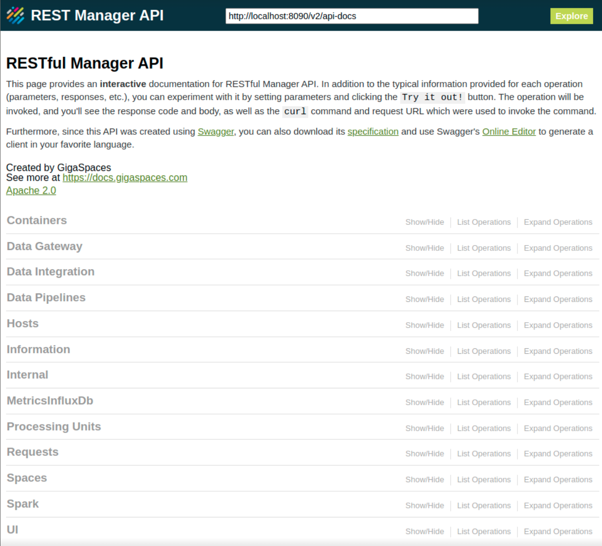
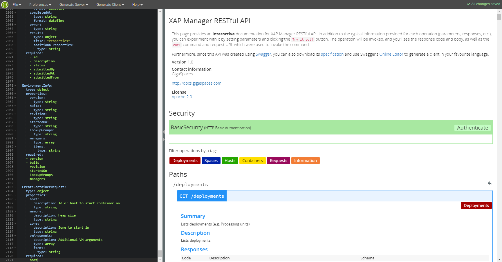
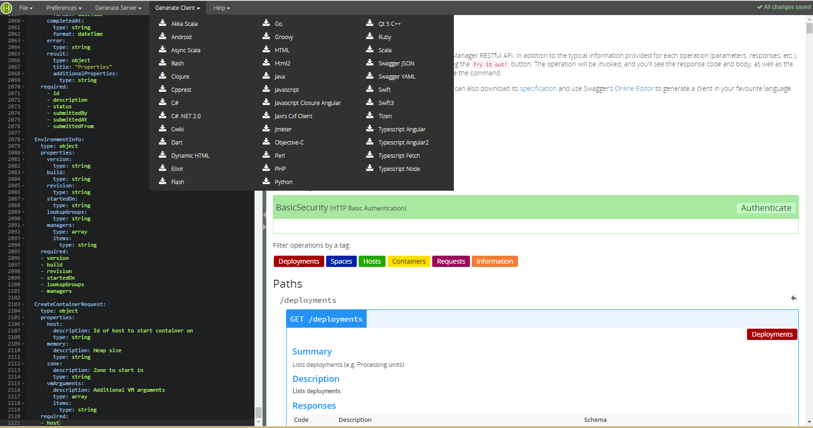

The Manager provides a REST Manager API for managing the GigaSpaces application environment.
To begin, start a standalone
After the
If you had a previous version of
You must start a
The REST Manager API was built with Swagger. Swagger provides typical information for each operation (parameters, responses, etc.). In addition, you can experiment with it by setting parameters and clicking the Try it out! button from within the documentation. This invokes the operation, and you can see the response code and body, as well as the curl command and request URL that were used to invoke the command. If you are familiar with the older Admin API, most of this is self explanatory. You can also download the yaml specification and use Swagger's Online Editor to generate a client in your favorite language.

In the Admin API, long-running operations (for example, deploy and undeploy) are asynchronous with no future or callback. You can either track progress manually, or use various ‘andWait’ overloads (for example, deployAndWait). The REST Manager API cannot use andWait so you must poll for completion, but each such operation behaves differently.
Instead, the REST Manager API contains Request functionality. Each long-running operation creates a request and returns its ID, so you can poll on the request ID and check the status (running/successful/failed). The request exposes additional useful information:
Who started the request (IP and user)
When the request was started and completed
If the request failed, an error message
Additional properties on the request execution
By default, the system keeps up to 100,000 completed requests (configurable), and purges the oldest as needed.
Deploying a Processing Unit requires uploading a resource (JAR/WAR/ZIP) to the
Upload a resource.
Deploy a Processing Unit, and provide a name of a previously uploaded resource.
This also means that when you undeploy a Processing Unit, the resource does not get deleted. If you want to delete it you must execute a separate REST operation (if you want to undeploy/redeploy with the same JAR. there’s no need to remove it). Currently you cannot delete/replace a JAR file if a deployed Processing Unit is using it.
The REST component is part of the
The REST Manager API allows for secured access and operations when the security enabled property is set.
This property should be configured using the EXT_JAVA_OPTIONSsetenv script, and is applied to all
The property:
-Dcom.gs.security.enabled=true
By default, to get you up and running, if nothing was configured the fallback security implementation uses a local file to save credentials (see File-Based Security).
Basic authentication does not encrypt user credentials, so running a com.gs.manager.rest.ssl.enabled.
You can do one of the following:
Disable SSL explicitly (not recommended).
Enable SSL, and the system will generate a certificate for you.
Enable SSL and provide a trusted certificate that you own.
An auto-generated certificate provides reasonable security, but if your enterprise security guidelines are more strict you can provide your own certificate.
Finally, if you need to configure something that we don’t expose (we use Jetty under the hood to host the web app), you can provide your own jetty.xml file via a system property.
| Port | System Property | Default |
|---|---|---|
| Enable/disable | com.gs.manager.rest.ssl.enabled | must be explicitly set |
| Keystore path | com.gs.manager.rest.ssl.keystore-path | |
| Keystore password | com.gs.manager.rest.ssl.keystore-password | |
| Custom config | com.gs.manager.rest.jetty.config |
The security properties file is used to configure the SecurityManager, that is responsible for the authentication and authorization process.
The security.properties file is common to all components and is usually located under
The REST component is part of the grid-security.properties instead.
The configuration file can be located anywhere in the classpath or in the classpath under config/security.
Alternatively, a system property can be set to indicate the location of the properties file:
-Dcom.gs.security.properties-file = my-security.properties
By setting -Dcom.gs.security.properties-file the property file will be located as a direct path (e.g. ~/home/user/my-security.properties),
a resource (e.g. "my-security.properties") in the classpath or in the classpath under config/security.
You can perform a wide variety of operations on all of the environment components listed below. The available operations, request parameters and URLs are listed on each relevant page of the local
You must start a
Containers - [%=Versions.rest-version%] See [%=Versions.rest-version%] the Containers page.
Hosts - See the Hosts page.
Information - See the Information page.
Processing Units - See the Processing Units page.
Requests - See the Requests page.
Spaces - See the Spaces page.
Spark - See the Spark page.
You can download the yaml configuration file from http://localhost:8090/v2/xap-manager-api.yaml
and import or copy and past the yaml content into the Swagger Editor.

From the Swagger user interface, you can generate client code in your preferred language:

The REST Manager API is extensible so that custom methods can be added. Developers can implement a plain Java class with JAX-RS annotations.
Follow the instructions below to create a sample extension for the REST Manager API:
Create a class and annotate it with com.gigaspaces.manager.rest.CustomManagerResource.
Create a method for each path you wish to intercept, and annotate it with an HTTP operation (e.g. @GET) and a @Path annotation with the relevant path.
Use JAX-RS parameter annotations (e.g. @QueryParam) to map HTTP request parameters to your method.
If you want to use Admin, create an appropriate field and annotate it with JAX-RS @Context annotation.
For example:
@CustomManagerResource
@Path("/demo")
public class BasicPluggableOperationTest {
@Context Admin admin;
@GET
@Path("/report")
public String report(@QueryParam("hostname") String hostname) {
Machine machine = admin.getMachines().getMachineByHostName(hostname);
return "Custom report: host=" + hostname +
", containers=" + machine.getGridServiceContainers() +
", PU instances=" + machine.getProcessingUnitInstances();
}
}
This class maps an HTTP GET operation in the /demo/report path to a report method. It accepts a query parameter, and uses an injected Admin instance to perform user-defined code (in this case, a custom report). For example, http://localhost:8090/v2/demo/report?hostname=mypc.
To run the example, compile it and package it into a .jar file, then copy the .jar to
Note that some JAX-RS features are not supported - see JAX-RS Support below for detailed information.
When the
com.gs.manager.rest.plugins.path="pathToJar"
In the example above the method returns a String, and in addition it implicitly returns an HTTP code 200 (OK). If you need to explicitly specify the HTTP result code, use org.openspaces.admin.rest.Response instead of a String.
For example:
import org.openspaces.admin.rest.Response
@GET
@Path("/report")
public Response report(@QueryParam("hostname") String hostname) {
Machine machine = admin.getMachines().getMachineByHostName(hostname);
if (machine == null)
return Response.status(javax.ws.rs.core.Response.Status.NOT_FOUND).entity("Host not found").build();
String result = "Custom report: host=" + hostname +
", containers=" + machine.getGridServiceContainers() +
", PU instances=" + machine.getProcessingUnitInstances();
return Response.ok().entity(result).build();
}
Make sure you use org.openspaces.admin.rest.Response and not JAX-RS Response.
To define security privileges for a custom method, you have to import org.openspaces.admin.rest.PrivilegeRequired and org.openspaces.admin.rest.RestPrivileges, and use @PrivilegeRequired.
The @PrivilegeRequired annotation accepts a RestPrivileges enum that corresponds to the Security privileges.
For more information about security, see the Security Guide.
For example:
import org.openspaces.admin.rest.PrivilegeRequired
import org.openspaces.admin.rest.RestPrivileges
@CustomManagerResource
@Path("/secured/")
public class PluggableSecuredContoller {
@Context Admin admin;
@PrivilegeRequired(RestPrivileges.MANAGE_GRID)
@GET
@Path("/getBase")
public String getBase() {
return "hello";
}
}
The JAX-RS API is used for extension support because it is a well-known standard and commonly used by developers. The sections below list the annotations that are supported, and those that are not supported.
The following JAX-RS annotations are supported:
HTTP operations: @GET, @PUT, @POST, @DELETE
@QueryParam, @PathParam, @DefaultValueSupported types: Java primitive types ("int', "long', etc.) and String
@ContextFields only (No support for constructors or method arguments)
Supported types: Admin
The following JAX-RS annotations are not supported:
HTTP operations: @OPTIONS, @HEAD
Parameters: @FormParam, @HeaderParam, @CookieParam, `@Matrix